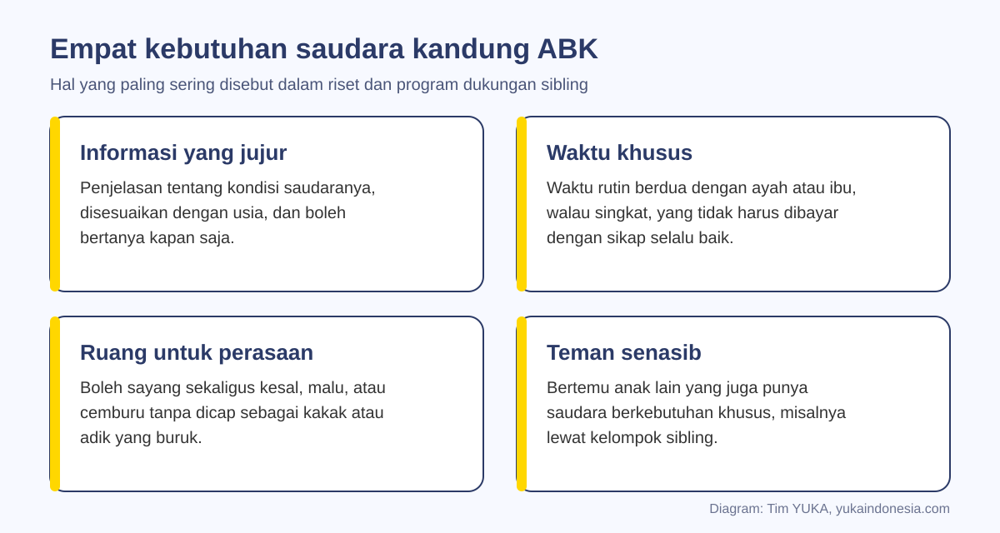
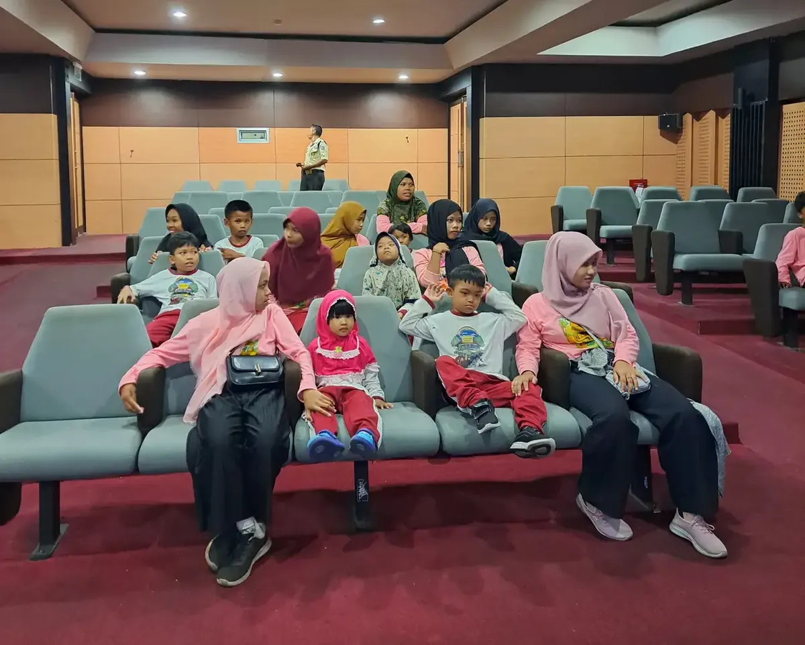
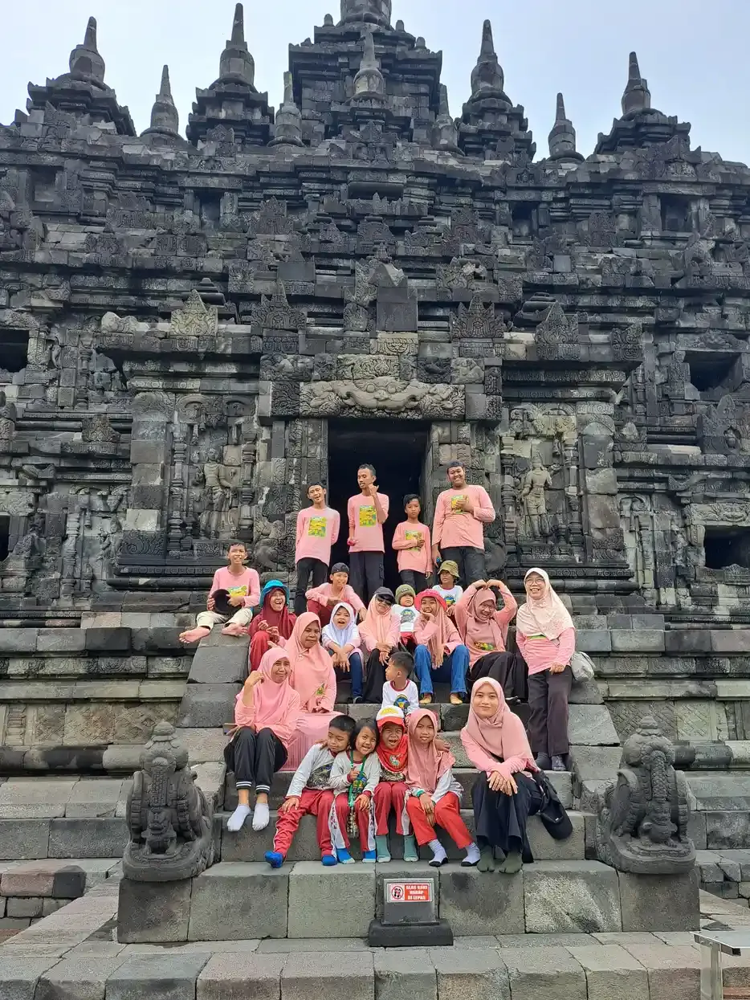

Sibling anak berkebutuhan khusus adalah kakak atau adik kandung dari anak dengan disabilitas, autisme, atau kebutuhan khusus lain. Riset menunjukkan sebagian dari mereka lebih rentan cemas dan sedih, tetapi efeknya kecil dan sangat bergantung pada dukungan keluarga. Informasi yang jujur, waktu khusus dengan orang tua, dan ruang untuk bercerita adalah pelindung utamanya.
Ketika satu anak di rumah membutuhkan terapi, sekolah khusus, atau pengawasan ekstra, perhatian keluarga wajar tercurah ke sana. Di sudut lain rumah yang sama ada kakak atau adik yang ikut menunggu di ruang tunggu klinik, ikut menahan diri saat saudaranya tantrum di tempat umum, dan sering kali diam-diam merasa "aku harus baik-baik saja supaya Ayah dan Ibu tidak tambah repot".
Dalam literatur, anak-anak ini disebut sibling, yaitu saudara kandung dari anak berkebutuhan khusus (ABK). Panduan ini melengkapi artikel YUKA tentang dukungan keluarga anak ABK dengan fokus pada satu anggota keluarga yang paling sering terlewat. Isinya: apa kata riset, perasaan yang wajar muncul, cara menjelaskan kondisi saudara sesuai usia, pembagian peran yang adil, sampai tanda kapan saudara kandung perlu bantuan profesional.
Penting sebelum membaca
Artikel ini adalah informasi edukasi untuk orang tua dan pendamping. Setiap keluarga berbeda. Bila kakak atau adik menunjukkan sedih, cemas, atau marah yang menetap lebih dari beberapa minggu, bicarakan dengan psikolog anak, guru BK, atau tenaga kesehatan di puskesmas.
Daftar Isi
- Siapa yang dimaksud sibling ABK
- Apa kata riset
- Perasaan yang wajar muncul
- Cara menjelaskan sesuai usia
- Waktu khusus dan perhatian yang adil
- Batas tanggung jawab sibling
- Kelompok dukungan sibling dan Sibshop
- Di sekolah dan tempat umum
- Tanda perlu bantuan profesional
- Rencana mingguan sederhana
- Pertanyaan yang sering diajukan
Siapa yang Dimaksud Sibling Anak Berkebutuhan Khusus
Istilah sibling berasal dari bahasa Inggris dan berarti saudara kandung. Dalam konteks pendidikan khusus, istilah ini dipakai untuk kakak atau adik yang tumbuh bersama saudara dengan autisme, ADHD, disabilitas intelektual, cerebral palsy, gangguan pendengaran, atau kondisi lain yang membuat keluarga perlu menyesuaikan rutinitas sehari-hari.
Hubungan saudara kandung adalah salah satu hubungan terpanjang dalam hidup seseorang. Ia biasanya bertahan lebih lama daripada hubungan dengan orang tua. Itulah sebabnya cara keluarga merawat hubungan ini sejak kecil berpengaruh hingga dewasa, termasuk saat kelak saudara kandung ikut terlibat dalam perencanaan masa depan anak berkebutuhan khusus.
Posisi tiap sibling juga berbeda. Kakak yang lebih tua sering dititipi tanggung jawab lebih cepat. Adik yang lahir belakangan mungkin tidak pernah mengenal keluarga tanpa jadwal terapi. Anak kembar dari anak berkebutuhan khusus bisa terus-menerus dibandingkan. Karena itu, tidak ada satu resep yang cocok untuk semua; yang ada adalah prinsip yang bisa disesuaikan dengan usia dan watak tiap anak.
Apa Kata Riset tentang Kondisi Mereka
Pertanyaan yang paling sering diajukan orang tua adalah apakah memiliki saudara berkebutuhan khusus membuat anak lain pasti terganggu. Jawaban riset lebih seimbang daripada yang dibayangkan banyak orang.
Meta-analisis oleh Shivers dan rekan (2019) menggabungkan 69 sampel independen tentang saudara kandung individu autis. Hasilnya, secara keseluruhan kelompok sibling memang menunjukkan hasil yang sedikit lebih kurang baik dibanding kelompok pembanding, dengan ukuran efek tergolong kecil. Perbedaan terlihat pada masalah internalisasi seperti gejala cemas dan sedih, tetapi tidak ada perbedaan bermakna pada penyesuaian diri secara umum, kemampuan koping, dan fungsi keluarga (Shivers dkk., 2019). Artinya, risiko itu nyata tetapi bukan takdir.
Kabar baiknya, dukungan yang tepat bisa membantu. Tinjauan sistematis Wolff dan rekan (2023) atas 24 studi intervensi menemukan perbaikan terbesar setelah program pada harga diri, kesejahteraan sosial, dan pengetahuan sibling tentang kondisi saudaranya, walaupun selisihnya dengan kelompok pembanding masih kecil (Wolff dkk., 2023).
| Kajian | Cakupan | Temuan utama |
|---|---|---|
| Shivers dkk., 2019 | Meta-analisis, 69 sampel independen saudara kandung individu autis | Efek keseluruhan kecil; lebih rentan gejala cemas dan sedih; tidak berbeda bermakna pada koping dan fungsi keluarga |
| Wolff dkk., 2023 | Tinjauan sistematis 24 studi intervensi untuk sibling | Harga diri, kesejahteraan sosial, dan pengetahuan membaik setelah program; selisih dengan kelompok tunggu kecil |
| Hartling dkk., 2014 | Tinjauan sistematis program untuk saudara anak dengan penyakit kronis atau disabilitas | Pada uji terkontrol yang lebih baik, kecemasan turun dan suasana hati membaik, tetapi hasil tidak konsisten antarstudi |
| Tudor dan Lerner, 2015 | Tinjauan sistematis 16 artikel tentang dukungan sibling | Metode dan hasil sangat bervariasi, sehingga manfaat program belum bisa disimpulkan seragam |
Pesan praktisnya: jangan berasumsi kakak atau adik pasti bermasalah, tetapi jangan pula menganggap mereka pasti kuat. Amati, tanyakan, dan sediakan dukungan sebelum masalah membesar.
Perasaan yang Wajar Muncul pada Saudara ABK
Banyak sibling menyimpan perasaan yang saling bertentangan. Mereka menyayangi saudaranya, bangga ketika saudaranya berhasil mengucapkan kata baru, tetapi di hari yang sama bisa kesal karena mainannya rusak atau malu ketika teman sekelas menatap saudaranya di pasar. Semua perasaan itu wajar dan bisa hadir bersamaan.
- Cemburu karena waktu dan perhatian orang tua lebih banyak tersita untuk saudaranya.
- Khawatir tentang kesehatan, keselamatan, atau masa depan saudaranya, kadang tanpa berani bertanya.
- Malu saat saudaranya berperilaku berbeda di tempat umum, terutama di usia remaja.
- Rasa bersalah karena merasa kesal, atau karena dirinya sendiri "tidak punya masalah".
- Tekanan untuk sempurna, yaitu keinginan menjadi anak yang tidak merepotkan agar beban orang tua berkurang.
- Bangga dan peduli, misalnya lebih cepat memahami teman yang berbeda dan lebih sabar.
Sisi positif seperti empati dan kepedulian memang sering dilaporkan, dan YUKA membahas cara menumbuhkannya dalam artikel empati pada anak berkebutuhan khusus. Namun, sisi positif ini jangan dipakai untuk menutup sisi yang berat. Anak yang terus dipuji "kamu hebat, tidak pernah mengeluh" bisa belajar bahwa mengeluh itu terlarang.

Cara Menjelaskan Kondisi Saudara Sesuai Usia
Anak yang tidak diberi penjelasan akan mengisi kekosongan dengan imajinasinya sendiri. Ada yang mengira kondisi saudaranya menular, ada yang mengira itu salahnya karena pernah berkelahi. Penjelasan yang jujur dan sederhana mencegah salah paham seperti ini. Orang tua yang baru menerima diagnosis bisa memulainya setelah diri sendiri cukup tenang; panduan langkah awal setelah menerima diagnosis bisa membantu menyusun kata-katanya.
| Usia sibling | Yang biasanya bisa dipahami | Contoh kalimat |
|---|---|---|
| 3 sampai 5 tahun | Hal konkret yang terlihat sehari-hari | "Adik belum bisa bicara seperti kamu, jadi dia menunjuk atau menarik tangan kalau mau sesuatu." |
| 6 sampai 9 tahun | Sebab sederhana dan cara membantu | "Otak Kakak bekerja dengan cara berbeda. Bukan salah siapa pun dan tidak menular. Suara keras membuatnya kaget, jadi kita pelankan TV." |
| 10 sampai 12 tahun | Nama kondisi, terapi, dan alasan aturan rumah | "Namanya autisme. Terapi wicara membantu Adik berkomunikasi. Kalau ada pertanyaan dari temanmu, kita bisa latihan jawabannya." |
| Remaja | Masa depan, keturunan, dan peran keluarga kelak | "Kamu boleh bertanya apa saja, termasuk soal nanti setelah kami tua. Keputusan itu kita bicarakan bersama, bukan dibebankan padamu." |
Pembagian usia di atas hanya patokan kasar. Yang lebih penting adalah membuka pintu: katakan bahwa pertanyaan boleh diajukan kapan saja, dan "Ibu belum tahu, nanti kita cari tahu bersama" adalah jawaban yang sah. Bila keluarga memakai jadwal visual untuk anak autis, ajak sibling ikut menyusunnya agar ia paham alasan di balik rutinitas rumah.
Waktu Khusus dan Pembagian Perhatian yang Adil
Adil tidak selalu berarti sama rata. Anak yang membutuhkan terapi memang memerlukan lebih banyak jam. Yang dibutuhkan sibling adalah kepastian bahwa dirinya juga punya tempat khusus. Cara paling sederhana adalah waktu berdua yang rutin dan terjadwal, misalnya 20 menit setiap Sabtu pagi untuk bersepeda, memasak, atau sekadar mengobrol sebelum tidur.
Beberapa prinsip yang membantu:
- Terjadwal, bukan sisa waktu. Waktu khusus yang selalu batal karena urusan terapi justru menegaskan pesan bahwa sibling nomor dua.
- Bukan hadiah atas sikap baik. Waktu berdua tetap berjalan walau minggu itu sibling sedang rewel.
- Libatkan anggota keluarga lain. Ayah, nenek, atau om bisa bergantian menemani, sehingga beban tidak hanya di pundak ibu.
- Rayakan pencapaian sibling sendiri. Lomba, nilai, atau hobi sibling layak mendapat sorotan yang sama.
Waktu khusus lebih mudah dijaga bila orang tua tidak kehabisan tenaga. Karena itu, merawat diri sendiri bukan kemewahan. Artikel mengelola stres orang tua anak ABK, self-care untuk orang tua anak disabilitas, dan pilihan respite care atau pengasuhan pengganti sementara membahas cara mendapatkan jeda yang aman.

Batas Tanggung Jawab: Membantu, Bukan Menggantikan Orang Tua
Melibatkan sibling dalam pekerjaan rumah dan membantu saudaranya itu baik, selama porsinya sesuai usia. Masalah muncul ketika kakak berusia sepuluh tahun rutin menjadi pengasuh utama, harus selalu menjaga saudaranya di sekolah, atau merasa bertanggung jawab atas keselamatan seluruh keluarga.
Bicarakan secara terbuka tiga hal: bantuan apa yang sifatnya sukarela, tugas apa yang memang menjadi kewajiban semua anak di rumah, dan tugas apa yang tetap menjadi tanggung jawab orang dewasa. Contohnya, membacakan buku untuk adik bisa sukarela; merapikan mainan bersama adalah tugas semua anak; sementara menenangkan krisis perilaku, memberi obat, dan mengantar terapi adalah tugas orang dewasa.
Ajarkan juga apa yang harus dilakukan bila situasi terasa tidak aman, misalnya saat saudaranya mengamuk dan memukul. Sibling berhak menjauh dan memanggil orang dewasa tanpa merasa bersalah. Panduan cara mengatasi tantrum anak autis bisa dibaca bersama remaja agar ia paham bedanya membantu dan mengambil alih.
Di masa remaja, sibling sering mulai memikirkan masa depan: siapa yang kelak mendampingi saudaranya. Pertanyaan ini sehat. Jawablah dengan rencana keluarga yang nyata, bukan janji yang dibebankan sepihak. Keterlibatan sibling dalam perencanaan masa depan sebaiknya berupa pilihan yang dibicarakan, bukan kewajiban yang diwariskan.
Kelompok Dukungan Sibling dan Sibshop
Salah satu kebutuhan yang paling jarang terpenuhi adalah bertemu teman senasib. Di sekolah, sibling mungkin satu-satunya anak yang punya saudara berkebutuhan khusus, sehingga sulit menemukan teman yang benar-benar paham.
Model yang paling dikenal adalah Sibshops dari Sibling Support Project di Amerika Serikat: pertemuan untuk saudara kandung yang memadukan permainan, diskusi santai antarsesama sibling, dan informasi tentang disabilitas. Tujuannya bukan "memperbaiki" perasaan sibling, melainkan memberi ruang tempat mereka diakui sebagai anak dengan kebutuhannya sendiri.
Di Indonesia, program serupa belum banyak tersedia secara formal. Namun, prinsipnya bisa diterapkan dalam skala kecil:
- Komunitas orang tua atau sekolah inklusi mengadakan sesi bermain khusus untuk kakak dan adik siswa, terpisah dari kegiatan terapi.
- Fasilitator orang dewasa menjaga suasana aman dan kerahasiaan cerita anak.
- Kelompok disusun berdasarkan rentang usia yang dekat agar obrolan nyambung.
- Orang tua tidak ikut di dalam ruangan, sehingga anak lebih leluasa bercerita.
Hasil riset atas program semacam ini menjanjikan tetapi belum seragam (Tudor dan Lerner, 2015), jadi anggap sebagai pelengkap, bukan pengganti bantuan profesional bila memang dibutuhkan. Kegiatan kebersamaan yang inklusif juga sejalan dengan semangat inklusi sosial: semua anak di keluarga berhak ikut serta.

Saat di Sekolah dan di Tempat Umum
Sibling kerap berada di garis depan ketika lingkungan bereaksi terhadap saudaranya: tatapan di pusat perbelanjaan, pertanyaan teman sekelas, atau ejekan. Persiapan sederhana membuat mereka tidak merasa sendirian.
Sebelum bepergian, ceritakan apa yang mungkin terjadi dan siapa orang dewasa yang bertanggung jawab. Beri sibling izin untuk tidak menjelaskan apa pun kepada orang asing, untuk menjauh sejenak, dan untuk meminta bantuan. Latih bersama kalimat pendek yang nyaman bagi dia, misalnya "Adikku autis, dia sedang kewalahan dengan suara ramai."
Di sekolah, kabari wali kelas bila sibling sedang menghadapi masa sulit di rumah, misalnya saat saudaranya baru didiagnosis atau dirawat di rumah sakit. Guru yang tahu konteks bisa lebih peka ketika nilai turun atau anak tampak murung. Jika sibling bersekolah di sekolah yang sama dengan saudaranya, pastikan ia tidak otomatis dijadikan "penjaga" saudaranya; tugas pendampingan ada pada guru dan shadow teacher.
Bila sibling menjadi sasaran ejekan karena saudaranya, tangani seperti perundungan lain: dengarkan, catat kejadiannya, dan bicarakan dengan sekolah. Peran orang tua dalam membangun budaya sekolah yang ramah disabilitas dibahas di artikel peran orang tua dalam pendidikan inklusi.
Tanda Saudara Kandung Perlu Bantuan Profesional
Sebagian besar perasaan sibling akan mereda dengan dukungan keluarga. Namun, ada tanda yang menunjukkan anak membutuhkan bantuan lebih, terutama bila berlangsung beberapa minggu atau makin berat. Gambaran tanda gangguan emosi pada anak usia sekolah juga dibahas di artikel gangguan emosional pada anak sekolah.
| Yang terlihat | Contoh | Langkah yang disarankan |
|---|---|---|
| Perubahan pola harian | Sulit tidur, nafsu makan berubah, sering mengeluh sakit perut atau kepala tanpa sebab jelas | Catat polanya, periksakan ke puskesmas atau dokter anak |
| Menarik diri | Berhenti bermain dengan teman, enggan ke sekolah, nilai turun tajam | Ajak bicara empat mata, hubungi wali kelas atau guru BK |
| Emosi yang menetap | Marah, cemas, atau sedih hampir setiap hari; merasa harus menjaga keluarga sendirian | Konsultasi ke psikolog anak |
| Takut berada di rumah | Takut ditinggal berdua dengan saudaranya karena pernah terluka | Tinjau ulang rencana keamanan rumah bersama tenaga profesional |
| Pikiran menyakiti diri | Mengucapkan ingin menghilang atau menyakiti diri | Segera cari pertolongan tenaga kesehatan jiwa atau layanan darurat |
Mencari bantuan untuk sibling bukan tanda keluarga gagal. Justru itu bentuk perhatian yang setara: satu anak mendapat terapi sesuai kebutuhannya, anak lain pun mendapat dukungan sesuai kebutuhannya.
Rencana Mingguan Sederhana untuk Keluarga
Teori akan lebih mudah dijalankan bila dipecah menjadi kebiasaan kecil. Berikut contoh rencana yang bisa disesuaikan dengan jadwal keluarga:
- Satu waktu khusus terjadwal untuk setiap sibling, ditulis di kalender keluarga yang terlihat semua orang.
- Satu obrolan perasaan menjelang tidur dengan pertanyaan terbuka, misalnya "Apa bagian paling menyebalkan minggu ini?" Dengarkan tanpa buru-buru menasihati.
- Satu kegiatan bersama semua anak yang disukai semua pihak, seperti memasak sederhana atau bermain bola di halaman. Ide kegiatan yang melatih interaksi ada di artikel cara melatih social skills anak autis di rumah.
- Satu evaluasi pembagian tugas antara ayah dan ibu, supaya beban tidak bergeser diam-diam ke sibling. Kekompakan pasangan juga berpengaruh, seperti dibahas di tips hubungan suami istri dengan anak ABK.
Mulailah dari satu kebiasaan saja. Konsistensi kecil lebih bermakna daripada rencana besar yang berhenti di minggu kedua.
Pendampingan di YUKA
Di Sekolah Inklusi Taruna Imani, kegiatan di luar kelas seperti kunjungan museum dan candi terbuka untuk dinikmati bersama. Orang tua yang ingin berdiskusi tentang cara mendampingi kakak atau adik siswa di rumah dapat menghubungi tim YUKA lewat WhatsApp untuk berbagi pengalaman dengan pendamping kami.
Pertanyaan yang Sering Diajukan
Apa yang dimaksud sibling anak berkebutuhan khusus?
Sibling anak berkebutuhan khusus adalah kakak atau adik kandung dari anak dengan disabilitas, autisme, ADHD, atau kebutuhan khusus lain. Mereka tumbuh di keluarga yang rutinitasnya ikut menyesuaikan kebutuhan saudaranya, sehingga juga membutuhkan perhatian dan dukungan tersendiri.
Apakah saudara kandung anak autis pasti mengalami masalah emosi?
Tidak pasti. Meta-analisis Shivers dan rekan (2019) atas 69 sampel menemukan risiko gejala cemas dan sedih yang sedikit lebih tinggi dengan ukuran efek kecil, tetapi tidak ada perbedaan bermakna dalam koping dan fungsi keluarga. Dukungan keluarga sangat menentukan.
Bagaimana cara menjelaskan kondisi adik berkebutuhan khusus kepada kakaknya?
Gunakan bahasa sederhana sesuai usia, tekankan bahwa kondisi itu bukan salah siapa pun dan tidak menular, lalu jelaskan cara membantu sehari-hari. Untuk anak yang lebih besar, sebutkan nama kondisinya dan jenis terapinya, serta buka kesempatan bertanya kapan saja.
Apakah wajar kalau kakak merasa cemburu atau malu pada adiknya yang ABK?
Wajar. Cemburu, malu, kesal, khawatir, sekaligus sayang dan bangga bisa hadir bersamaan. Yang penting orang tua menerima perasaan itu tanpa menghakimi, lalu membantu anak mencari cara sehat untuk menyalurkannya.
Berapa lama waktu khusus yang dibutuhkan sibling?
Tidak ada angka baku. Yang lebih penting adalah rutin dan terjadwal, misalnya 15 sampai 30 menit setiap minggu, dan tidak dibatalkan atau dijadikan hadiah atas sikap baik. Anggota keluarga lain bisa bergantian menemani.
Apakah boleh meminta kakak menjaga adiknya yang berkebutuhan khusus?
Boleh untuk bantuan ringan yang sesuai usia, seperti bermain bersama atau membacakan buku. Tugas berat seperti menenangkan krisis perilaku, memberi obat, atau menjadi pengasuh utama tetap menjadi tanggung jawab orang dewasa.
Apa itu Sibshop?
Sibshop adalah model kelompok dukungan dari Sibling Support Project untuk saudara kandung anak berkebutuhan khusus. Kegiatannya memadukan permainan, diskusi antarsesama sibling, dan informasi tentang disabilitas, dengan tujuan memberi ruang bagi sibling untuk diakui kebutuhannya.
Kapan sibling perlu dibawa ke psikolog?
Bila sedih, cemas, atau marah berlangsung hampir setiap hari selama beberapa minggu, anak menarik diri, enggan sekolah, takut berada di rumah, atau mengucapkan ingin menyakiti diri. Untuk tanda terakhir, segera cari pertolongan tenaga kesehatan jiwa.
Bacaan Terkait
Lanjutkan membaca panduan keluarga lain dari YUKA:
Sumber dan Referensi
- Shivers CM, Jackson JB, McGregor CM. Functioning Among Typically Developing Siblings of Individuals with Autism Spectrum Disorder: A Meta-Analysis. Clin Child Fam Psychol Rev, 2019
- Wolff B dkk. Psychosocial Interventions and Support Groups for Siblings of Individuals with Neurodevelopmental Conditions: A Mixed Methods Systematic Review. Clin Child Fam Psychol Rev, 2023
- Hartling L dkk. A systematic review of interventions to support siblings of children with chronic illness or disability. J Paediatr Child Health, 2014
- Tudor ME, Lerner MD. Intervention and support for siblings of youth with developmental disabilities: a systematic review. Clin Child Fam Psychol Rev, 2015
- Sibling Support Project. Sibshops
Catatan: Artikel ini bersifat edukasi umum dan bukan pengganti saran psikolog, guru pendidikan khusus, dokter, atau tenaga profesional lain. Sumber diperiksa tim YUKA pada 5 Oktober 2026.